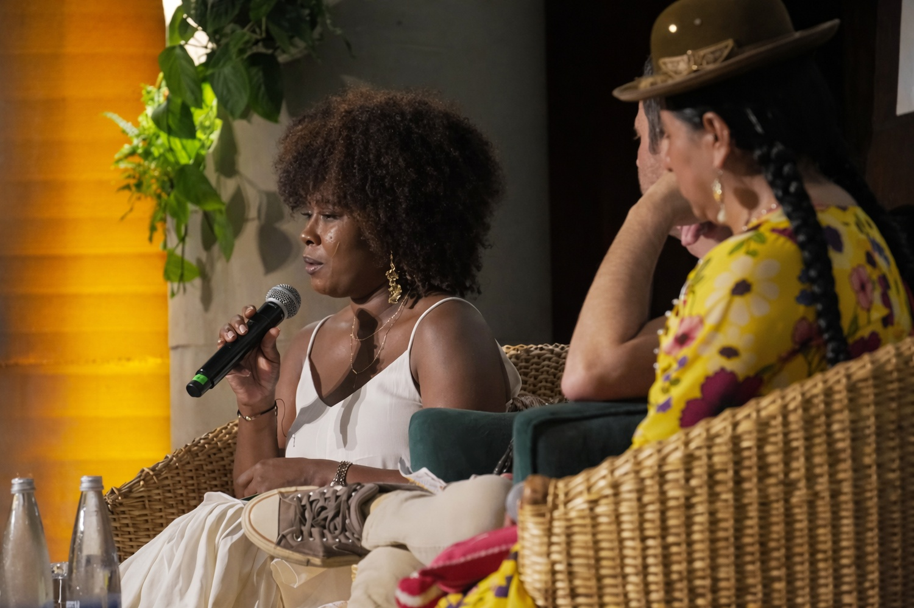
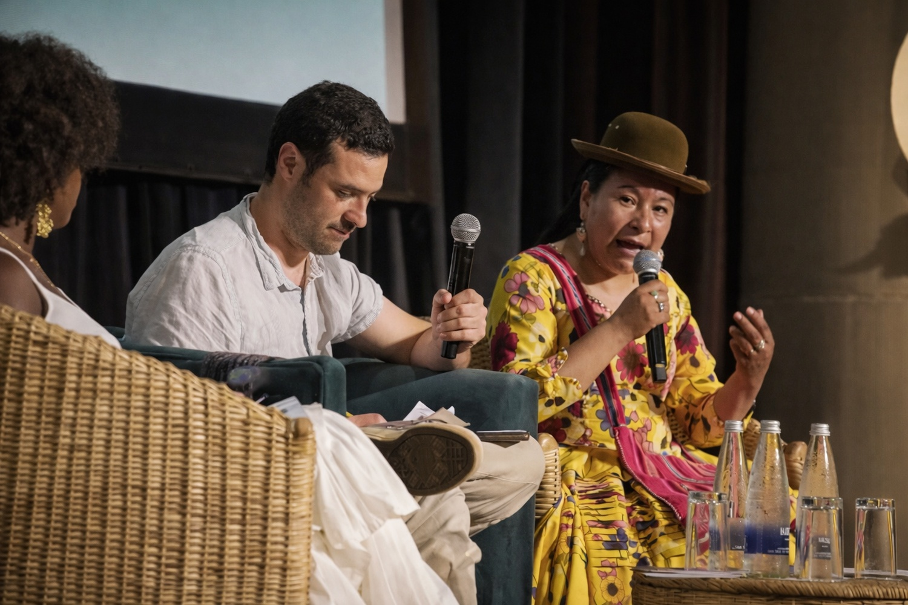
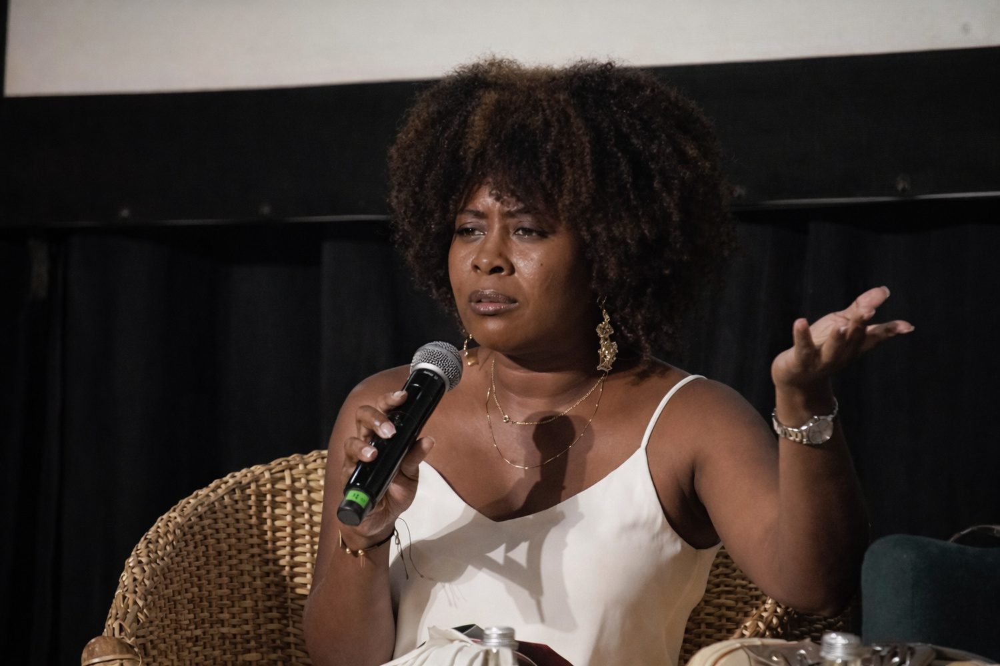

Guardianas del agua del Titicaca y Atrato exigen lagos y ríos “sujetos de derecho”

Desde las regiones de Puno, en Perú, y el Chocó colombiano emergen voces que reclaman un cambio de paradigma, reconocer al Lago Titicaca y al río Atrato como sujetos de derecho, con existencia propia. En abril de 2025, el Consejo Regional de Puno aprobó por unanimidad una ordenanza que declara al Titicaca y sus afluentes como sujetos de derecho. En Colombia, la Corte Constitucional ya había otorgado ese reconocimiento al Atrato en 2016, tras años de degradación ambiental. Ambos casos reflejan una tendencia global que entiende estos ecosistemas como entes vivos, en sintonía con la cosmovisión indígena y frente a crecientes amenazas de contaminación.
El Titicaca, ubicado a 3.810 metros sobre el nivel del mar y con 3.300 km² de superficie, arrastra décadas de vertimientos de aguas residuales, quema de totora y presencia de metales pesados como arsénico y mercurio, que han provocado la muerte de miles de peces, aves y anfibios en riesgo. En el departamento del Chocó, en el Pacífico colombiano, el río Atrato es la principal vía y sustento de cerca de 400.000 personas, afectadas por la minería ilegal y la precariedad en servicios básicos.
En ambos territorios, el liderazgo de las mujeres ha sido decisivo. La líder indígena Soraya Poma y la ingeniera agrónoma afrocolombiana Maryury Mosquera encabezan procesos comunitarios que han convertido el reclamo ancestral por el agua en acciones legales y políticas públicas. Hoy sus iniciativas impulsan agendas de descontaminación, restauración y gobernanza del agua en articulación con autoridades locales y nacionales.
Soraya, para empezar, ¿en qué situación se encuentra actualmente el lago Titicaca y por qué consideran necesario declararlo sujeto de derechos?
Soraya Poma (S.P.): Titicaca es nuestro lago sagrado, pero enfrenta una contaminación severa. En las comunidades aymaras y quechuas de Puno hemos visto cómo las aguas negras sin tratar, la quema de totora y los residuos de las flotas de pesca llegan al lago día a día. Esta polución ya ha afectado gravemente su biodiversidad, los peces, las aves e incluso anfibios entran en peligro por metales pesados como el mercurio y el arsénico.
Al lado boliviano hay problemas similares, así que no existen fronteras cuando el agua se contamina de ambos lados. Por eso nos organizamos, preguntamos ¿qué legado dejaremos a los jóvenes? ¿Dejar un lago contaminado, con ríos destruidos? No. Reconocer al Titicaca como sujeto de derechos significa obligar a las autoridades a verlo con dignidad intrínseca –como un ser vivo– y a protegerlo. En la ordenanza aprobada en Puno, por ejemplo, al lago se le reconocen derechos fundamentales, el de existencia, de regeneración natural y el de ser restaurado si está enfermo. También puede ser “representado” por las comunidades indígenas y entidades que velen por él. Esto formaliza nuestra visión ancestral, el agua es vida, y debe tener voz propia en las decisiones públicas.
Maryury, ¿podrías resumirnos el proceso que llevó a la sentencia del río Atrato en Colombia, y qué implicó declararlo sujeto de derechos?
Maryury Mosquera (M.M.): La tutela del Atrato nació desde las comunidades negras e indígenas del Chocó. En 2016 interpusimos la acción judicial basados en la resolución 064 de la Defensoría del Pueblo (2014), que señalaba ya la crisis social, económica y ambiental del Atrato. Planteamos que se vulneraban los derechos fundamentales a la vida, salud, agua y ambiente sano en nuestra cuenca.
La Corte Constitucional falló a nuestro favor en segunda instancia ese año, declarando al río Atrato como sujeto de derechos. Fue el primer caso así en Colombia y uno de los primeros en el mundo. El fallo reconoció que el Atrato tiene una “invaluable riqueza natural” y está estrechamente ligado a las comunidades étnicas que lo han cuidado. Por eso, la sentencia exigió planes de descontaminación, ordenó crear una comisión de guardianes compuesta por un delegado del Estado —designado al Ministerio de Ambiente— y otro de las comunidades ribereñas, que a través de organizaciones locales eligieron 14 líderes para representar colectivamente nuestros intereses. Desde entonces, ese Cuerpo Colegiado de Guardianes vela junto con el Gobierno por la ejecución de medidas como erradicar la minería ilegal, estudios de salud ambiental y proyectos de soberanía alimentaria.

¿Qué significa en la práctica declarar a un cuerpo de agua como sujeto de derechos?
S.P.: En la práctica, dar derechos legales al lago Titicaca implica varios compromisos concretos. La ordenanza regional que logramos en Puno le confiere personalidad jurídica propia, es un “ente viviente” cuyos derechos hay que proteger. Formalmente el texto establece que Titicaca tiene derecho a su existencia y a mantener su integridad ecológica, a regenerarse naturalmente, a estar libre de contaminación, y en caso de daño, a ser restaurado. También puede “ser representado” por las comunidades indígenas y las instituciones competentes, lo cual implica nuestra participación directa en planes de gestión de la cuenca.
Pero el desafío práctico mayor es pasar de papel a acción, conseguir presupuesto para plantas de tratamiento, fortalecer la fiscalización de residuos, involucrar a los ministerios y gobiernos regionales. Por ejemplo, ahora estamos en la etapa de reglamentación de la ordenanza, exigiendo que el Estado asigne fondos específicos –esencialmente para construir las plantas de aguas residuales que Titicaca necesita urgentemente–.
Para las comunidades locales, ser sujeto de derecho significa que tenemos herramientas legales adicionales para exigir rendición de cuentas a las autoridades.
M.M.: En nuestro caso, la sentencia T-622 creó obligaciones específicas: el Estado y las comunidades actúan como ‘padres’ de un hijo menor de edad, el río. Cada orden de la Corte se traduce en acciones colectivas. Así, se reconoció a Atrato como sujeto de derechos y se mandó diseñar e implementar planes de descontaminación, recuperación de ecosistemas, y protección cultural de nuestras formas de vida.
En la práctica, ser sujeto de derechos nos dio voz legal. Por un lado, el Ministerio de Ambiente se volvió nuestro representante; por otro, nosotros creamos el cuerpo colegiado de guardianes. Esto nos obliga a dialogar directamente con el Gobierno en pie de igualdad, en las mesas de trabajo no hay jerarquía, el Estado y las comunidades rinden cuentas por igual. Además, proclamó un principio fundamental, el río Atrato es “una riqueza natural y cultural” y debe tratarse como un ente vivo, no como una vía muerta.
¿Cómo fue el proceso interno para aprobar la ordenanza? ¿Con qué obstáculos se encontraron?
S.P.: No fue fácil. Luchamos años para que nuestras autoridades locales entendieran esta perspectiva. Inicialmente el argumento principal fue que “el lago ni habla ni respira, ¿para qué perder el tiempo?”, como nos respondió un procurador regional en un principio. Nos echaron de su oficina.
Pero nosotras no nos rendimos, le demostramos con conocimiento de leyes —Convenio 169 de la OIT, Ley de Recursos Hídricos, etc. — que tenemos derechos ancestrales sobre el agua. Poco a poco se fue valorando nuestra voz.
Uno de los mayores conflictos surgió en el propio Consejo Regional, inicialmente propusieron la ordenanza sin considerar a nuestras organizaciones, sino solo a comunidades. Nos opusimos porque no concebimos que el gobierno se adjudique todo el mérito, cuando el impulso vino de la sociedad civil. Tras discusiones hasta medianoche y más de diez reuniones, logramos que se reconociera nuestra participación y la de las comunidades en la redacción del artículo respectivo.
Incluso hubo un intento de la Autoridad de Agua Nacional por declarar nula la ordenanza, pero no prosperó cuando estuvimos presentes en la sesión en Puno y logramos la aprobación por 17 votos a favor el 24 de abril de 2025. Fue un día histórico. Llegamos a las 9 de la mañana y salimos a las 9 de la noche, rogando consejero por consejero que votara por el lago, invocando el futuro de nuestros nietos. Al final, se aprobó por unanimidad.
M.M.: En el caso del Atrato, la “pelea” fue judicial e institucional pero también constante. Después de ganar la tutela en la Corte, no nos sentamos a esperar. Tuvimos que presionar al Gobierno Nacional para que nombrara al representante legal y conformar la comisión de guardianes. El decreto lo hizo en 2017, pero a nivel local el reto ha sido que muchos funcionarios desconocen nuestra cosmovisión. Por ejemplo, cuando acercamos el concepto de “enfoque biocultural”, hubo desconcierto, explicarles por qué no pueden traer un proyecto de siembra sin respetar el calendario agrícola de la región, o que no organicen una reunión comunal el día de una festividad patronal.
Gracias a esas explicaciones logramos que institutos como el Ministerio de Agricultura comprendieran que deben planificar con nuestras comunidades, no imponer modelos ajenos. También seguimos insistiendo a nivel nacional, en mesas con múltiples ministerios, les recordamos que sin voluntad política –y recursos suficientes–, la sentencia quedará en papel.

¿Qué papel han jugado las mujeres en estos procesos?
S.P.: Nosotras, las mujeres andinas, tenemos una conexión muy profunda con el agua, lo necesitamos para casi todas nuestras labores diarias. En el Altiplano, mientras el hombre a veces hace un solo trabajo, la mujer hace cientos de cosas: agricultura, cuida a la familia, cría animales, teje, sin parar. Por eso si hay algo que nos motive a pelear por el lago Titicaca es nuestra responsabilidad con los hijos. ¿A quién más le importa si el agua de la chacra es limpia o no? ¿Quién cocina, lava, da de beber a los animales? Nosotras.
En nuestra cosmovisión, el lago es como una madre, le hablamos, le cantamos, le ofrecemos leche, frutas, y nos conecta con lo sagrado. Durante este proceso llegamos a jurarnos con los Apus y achachilas —los espíritus de la montaña— para cumplir con esta lucha. Las mujeres fuimos quienes insistimos en no rendirnos, cada día decíamos “no desfallezcan, tenemos que lograrlo”.
Organizamos asambleas, capacitaciones e incluso hicimos pronunciaciones públicas frente al Gobernador y en los medios, así como las hermanas bolivianas en Copacabana.
M.M.: En el Atrato las mujeres también fuimos fundamentales. En mi caso personal, yo me negué a quedarme al margen, mi rol es estar al frente, caminando este proceso.
Históricamente las comunidades indígenas y afro han tenido roles definidos, pero aquí decidimos conscientemente participar activamente. Del grupo de 14 guardianes del Atrato nombrados, solo seis son mujeres, porque hubo quienes no pudieron dejar sus hogares. Pero eso no significa que las mujeres no estemos. Yo, por ejemplo, fui la primera mujer encargada de transmitir a la sociedad civil lo que dice la sentencia.
Creo que el río da vida tanto a hombres como a mujeres —nosotras igual engendramos hijos y tenemos que cuidarlos con agua limpia—. En cada reunión con autoridades recordábamos que las comunidades ribereñas no diferencian género, somos uno con el río, protegemos juntos nuestro hogar. Además, la participación de jóvenes mujeres en comités locales e iniciativas de monitoreo ambiental está creciendo mucho después de la sentencia, lo cual habla del poder de este enfoque.
¿Qué implicaciones políticas estructurales ven ustedes en ambos casos y qué soluciones proponen?
S.P.: Vemos que la raíz del problema es la débil gestión institucional. En Perú, aunque existe legislación ambiental, en la práctica no se ha desarrollado infraestructura básica para el agua en todo el altiplano. No hay plantas de tratamiento y no hay presupuesto suficiente. Es un problema estructural, la fragmentación de competencias entre municipalidades, gobiernos regionales y el gobierno central a veces genera “conflictos de competencias” como dice el Gobierno Nacional. Sin embargo, la misma autonomía regional nos da la atribución de aprobar esta ordenanza por interés local.
En términos de soluciones, estamos empujando políticas públicas concretas. Que la ordenanza se reglamente con un plan de inversión específico, que los ministerios coordinen programas de descontaminación, reforestación de cuencas y educación ambiental. Parte de nuestro esfuerzo es concientizar a los alcaldes distritales y provinciales sobre su deber en la ejecución. También trabajamos en alianzas con universidades para diagnósticos técnicos —por ejemplo, estudios sobre contaminación en Puno— y en proyectos de recuperación de humedales.
M.M.: Desde la sentencia del Atrato se abrió una oportunidad para replantear la gestión pública en Chocó. Sin embargo, seguimos enfrentando como obstáculo la centralización.
A nivel nacional muchas entidades no conocen a fondo nuestra realidad; a nivel local faltan recursos y voluntad política. Por eso nosotros mismos desarrollamos capacidades, con apoyo de cooperantes hemos hecho pedagogía por toda la cuenca con material adaptado —coplas, juegos, idiomas locales— para que cada comunidad entienda la sentencia. Nuestras soluciones apuntan a la gobernanza territorial, estamos impulsando Planes de Vida en las comunidades ribereñas que incluyan la protección del río, y proponemos instrumentos de planificación —como mapas agroecológicos y bioculturales— para que la institucionalidad local tenga en cuenta nuestras prácticas.
También hemos explorado mecanismos innovadores de financiamiento. Por ejemplo, algunos guardianes están analizando si proyectos de pago por servicios ecosistémicos (bonos de carbono) podrían dirigir recursos a la conservación comunitaria, aunque siempre con cautela, porque no queremos que entren empresas extractivas disfrazadas de soluciones.
Finalmente, ¿qué recomendaciones darían a distintos públicos: a la ciudadanía en general, a los líderes locales y a los tomadores de decisión?
S.P.: A la ciudadanía queremos decirle que el agua nos conecta a todos. Cada persona puede informarse y exigir mejores servicios. Por ejemplo, asegurándose de que sus alcaldes inviertan en plantas de tratamiento o programas de saneamiento. Las comunidades pueden organizarse en comités de vigilancia ambiental para monitorear la calidad del agua, eso también fortalece la gobernanza local. Y a las futuras generaciones les diría que su derecho a un ambiente sano es tan legítimo como su derecho a la educación o la salud; no aceptemos dejar un Titicaca enfermo.
M.M.: A los tomadores de decisión les recordaría que los ecosistemas son el sustento de sus comunidades. En el Atrato hemos visto que cuando el Estado y las comunidades actúan juntos en pie de igualdad —como lo ordena la sentencia—, se acelera la acción. Por eso instamos a los ministerios y gobernadores a viajar, a bajarse del escritorio, a que recorran la cuenca, hablen con la gente, participen de nuestros rituales y recojan nuestras propuestas. El mensaje es que el Río Atrato es parte integral de la vida regional; protegerlo es responsabilidad de todos.